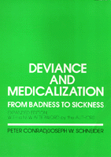

A classic text on deviance is updated and reissued
A classic text on deviance is updated and reissued


 A classic text on deviance is updated and reissued
A classic text on deviance is updated and reissued

|  |
Deviance and MedicalizationFrom Badness to SicknessPeter Conrad and Joseph W. Schneiderpaper EAN: 978-0-87722-999-5 (ISBN: 0-87722-999-6) |
Charles Horton Cooley Book Award, Society for the Study of Symbolic Interaction, 1981
"[It] should become a standard text in the study of deviance definitions an the starting point for the resolution of such problems as the definition and causes of medicalization and its interrelationship with other trends in social control."
—Contemporary Sociology
This classic text on the nature of deviance, originally published in 1980, is now reissued with a new Afterword by the authors. In this new edition of their award-winning book, Conrad and Schneider investigate the origins and contemporary consequences of the medicalization of deviance. They examine specific cases—madness, alcoholism, opiate addiction, homosexuality, delinquency, and child abuse—and draw out their theoretical and policy implications. In a new chapter, the authors address developments in the last decade—including AIDS, domestic violence, co-dependency, hyperactivity in children, and learning disabilities—and they discuss the fate of medicalization in the 1990s with the changes in medicine and continued restrictions on social services.
"Deviance and Medicalization is excellent...a worthwhile book for colleagues as well as for students."
—Qualitative Sociology
"An excellent text for sociology of medicine, social problems and deviance courses...a particularly apt choice in social science courses in medical schools."
—Social Science and Medicine
1. Deviance, Definitions, and the Medical Profession
Sociological orientations to deviance •
Witchcraft in Salem Village •
Universality and relativity of deviance •
Social control •
The medical profession and deviance in America •
Emergence of the medical profession: up to 1850 •
Crusading, deviance, and medical monopoly: the case of abortion •
Growth of medical expertise and professional dominance •
Structure of medical practice •
Overview of the book •
Suggested readings
2. From Badness to Sickness: Changing Designations of Deviance and Social Control
A historical-social constructionist approach to deviance •
Deviance as collective action: the labeling-interactionist tradition •
Social construction of reality: a sociology of knowledge •
Politics of definition •
Politics of deviance designation •
Deviance, illness, and medicalization •
The social construction of illness •
Illness and deviance •
Medicalization of deviance •
Expansion of medical jurisdiction over deviance •
The medical model and �moral neutrality� •
Summary •
Suggested readings
3. Medical Model of Madness: The Emergence of Mental Illness
Smitten by madness: ancient Palestine •
Roots of the medical model: classical Greece and Rome •
Dominance of the theological model: the Middle Ages •
Witchcraft, witch-hunts, and madness •
The European experience: madness becomes mental illness •
The great confinement •
Separation of the able-bodied from the lunatics •
Entrance of the physician •
Emergence of a unitary concept of mental illness •
The 19th-century American experience: the institutionalization of mental illness •
Asylum-building movement: a new �cure� for insanity •
The science of mental disease •
Freud, psychoanalysis, and medicalization •
Reappearance of the somaticists •
Mental illness and the public •
Reform and institutionalization •
Public acceptance •
Mental illness and criminal law •
The third revolution in mental health •
Psychotropic medication •
Decline in mental hospital populations •
Sociological research •
Psychiatric critique •
Community mental health: a bold, new approach •
Federal action and professional growth •
Community psychiatry •
Community psychiatry and the medical model •
Medical model of madness in the 1970s •
Summary •
Suggested readings
4. Alcoholism: Drunkenness, Inebriety, and the Disease Concept
Physiology of alcohol: uncontested applications of the medical model •
Alcohol and behavior: the question of control and the beginning of contest •
Disinhibitor hypothesis •
Deviant drinking as disease: historical foundations •
Colonial period •
The disease of inebriety and the concept of alcohol addiction •
Disease concept and the American temperance movement •
An enemy and a weapon: disease and abstinence •
Rise of the inebriate asylum and the rush to Prohibition •
Post-Prohibition rediscovery: the Yale Center, Alcoholics Anonymous, and the Jellinek formulation •
Yale Research Center of Alcohol Studies •
Alcoholics Anonymous •
Jellinek formulation •
Is alcoholism a disease? •
Medical response to the disease concept •
Supreme Court and the disease concept •
Future of the disease concept of alcoholism •
A coming crisis? •
Scientific claims •
Summary •
Suggested readings
5. Opiate Addiction: The Fall and Rise of Medical Involvement
Nature of opiates •
A miracle drug: pre- 19th-century use of opiates •
Politics of opium in the 19th century •
Recreational use in England and China •
Medical uses: from a panacea to a problem •
Discovery of addiction as a disease •
Addicts and addiction in a �dope fiend�s paradise� •
Entrepreneurs and the morality of opium: the creation of an evil •
American attitudes toward opiate addiction: from empathy to anxiety •
First prohibition of smoking opium •
Discovery of heroin •
Criminalization and demedicalization •
A quest for international control and the United States� response •
Harrison Act: the criminalization of addiction •
Reign of the criminal designation •
Addiction becomes a �criminal menace� •
Why narcotics laws have failed •
Reemergence of medical designations of addiction •
Support for a medical designation •
Excursus: the British experience •
Methadone and the remedicalization of opiate addiction •
�Heroin epidemic� and available treatment •
Adoption of methadone maintenance as public policy •
Methadone revisionists •
A final note on methadone and medicalization •
Summary •
Suggested readings
6. Children and Medicalization: Delinquency, Hyperactivity, and Child Abuse
Discovery of childhood •
Origins of juvenile delinquency •
Childhood deviance into the 19th century •
Child-savers and the house of refuge •
Child-savers and the ideology of child welfare •
Juvenile court •
William Healy, court clinics, and the child guidance movement •
Medical-clinical model of delinquency today •
Discovery of hyperkinesis •
Medical diagnosis of hyperkinesis •
Discovery of hyperkinesis •
A sociological analysis •
Child abuse as a medical problem •
Historical notes on the maltreatment of children •
Child protection •
Medical involvement and the discovery of child abuse •
Child abuse as a medical and social problem •
Social scientists� views of child abuse •
Changes in the definitions of what constitutes child abuse •
Children as a population �at risk� for medicalization •
Suggested readings
7. Homosexuality: From Sin to Sickness to Life-Style
Moral foundations: the sin against nature •
Ancient origins: the Persians and Hebrews •
Contributions of the Greeks •
From sin to crime: early Christianity and the Middle Ages •
New moral consensus: sin becomes sickness •
Medicine and moral continuity in the 18th century •
Masturbation and threatened manhood: a crusade in defense of moral health •
Consolidating the medical model: the invention of homosexuality •
Hereditary predisposition •
Criminalization and medicalization •
Homosexuality as a medical pathology •
Rise of the psychiatric perspective •
Contribution of Freud •
Sacrificing Freud: the reestablishment of pathology and the promise of cure •
Demedicalization: the continuing history of a challenge •
The armor of pioneering defense: �nature,� knowledge, and medicine •
Spreading skepticism: social change and social science research •
Rise of gay liberation: homosexuality as identity and life-style •
Official death of pathology: the American Psychiatric Association decision on homosexuality •
Beyond sickness, what? •
Summary •
Suggested readings
8. Medicine and Crime: The Search for the Born Criminal and the Medical Control of
Criminality – Richard Moran
The therapeutic ideal and the search for the born criminal •
Lombroso and the emergence of a biological criminology •
Danger of therapeutic tyranny •
A century of biomedical research •
Psychosurgery and the control of violence •
The XYY chromosome carrier •
The Lombrosian recapitulation •
Behavior modification •
Positive reinforcement •
Negative reinforcement •
Biotechnology •
CIA and mind control •
Summary and implications •
Suggested readings
9. Medicine as an Institution of Social Control: Consequences for Society
Types of medical social control •
Medical technology •
Medical collaboration •
Medical ideology •
Social consequences of medicalizing deviance •
Brighter side •
Darker side •
Exclusion of evil •
Medicalization of deviance and social policy •
Criminal justice: decriminalization, decarceration, and the therapeutic state •
Trends in medicine and medicalization •
Punitive backlash •
Some social policy recommendations •
Medicalizing deviance: a final note •
Summary
10. A Theoretical Statement on the Medicalization of Deviance
Historical and conceptual background •
American society as fertile ground for medicalization •
An inductive theory of the medicalization of deviance •
A sequential model •
Grounded generalizations •
Sociologists as challengers •
Hunches and hypotheses: notes for further research •
A concluding remark •
Summary
Afterword: Deviance and Medicalization: A Decade Later
Some conceptual issues •
Deviance and Medicalization and social constructionism •
Reflections on medicalized deviance a decade later •
Mental illness •
Alcoholism •
Opiate addiction •
Homosexuality •
Hyperactivity, child abuse, and family violence •
New areas of study and future issues •
References
Bibliography
Author Index
Subject Index
Peter Conrad is Professor of Sociology at Brandeis University. He has also co-edited Health and Health Care In Developing Countries (Temple) with Eugene B. Gallagher.
Joseph W. Schneider is Professor of Sociology at Drake University. Schneider and Conrad have also co-authored Having Epilepsy: The Experience and Control of Illness (Temple).
Sociology
Health and Health Policy
© 2015 Temple University. All Rights Reserved. This page: http://www.temple.edu/tempress/titles/890_reg.html.